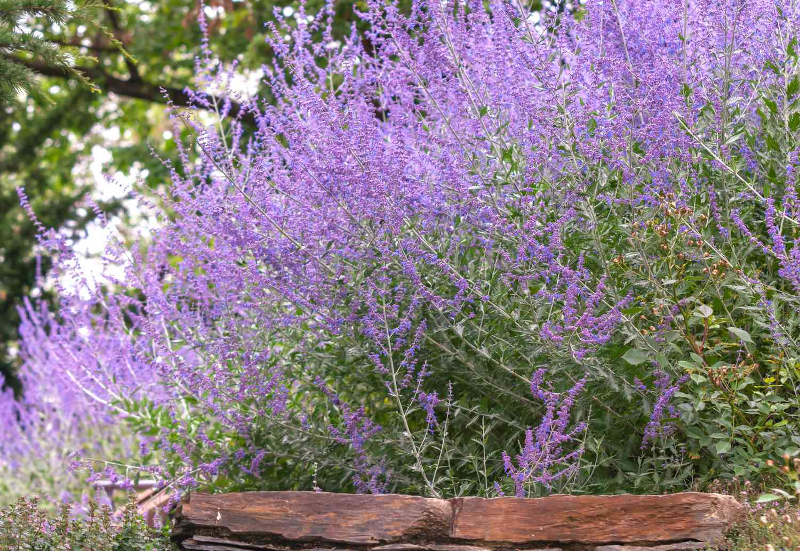

 Alchemilla is a genus of herbaceous perennial plants in the family Rosaceae, with the common name lady's mantle applied generically as well as specifically to Alchemilla mollis when referred to as a garden plant. The plant used as a herbal tea or for medicinal usage such as gynaecological disorders is Alchemilla xanthochlora or in Middle Europe the so-called common lady's mantle Alchemilla vulgaris. There are about 700 species, the majority native to cool temperate and subarctic regions of Europe and Asia, with a few species native to the mountains of Africa and the Americas.